bernie
 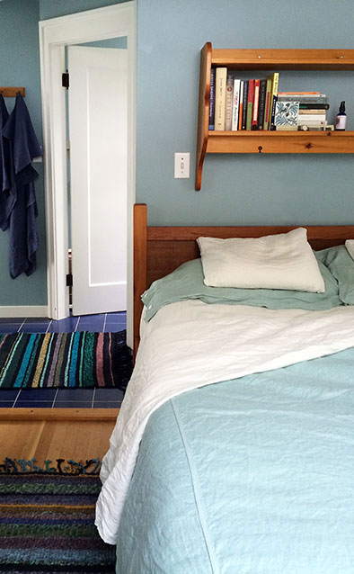
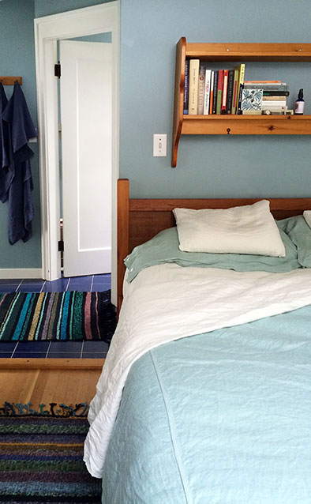
The summer of 2014 has been a summer of sun and warm breezes and soft evening light. We are fortunate to have a garden, an unsubdued yard and a clothesline….
The clothesline had laundry on it all season, and I have particularly enjoyed putting out my new bed linens, real linen.
Our home in Vancouver is an older house, built in the early 1920’s…..we have made some changes to it, always paying attention to practicality and function and to lasting, durable and beautiful materials.
We prefer hand made pottery, simple forms, and fewer things but items that we use daily, again and again. We spend a lot of time in our kitchen making meals, everyone in the family creating something wonderful to share.
Natural fabrics contribute to our simple comfortable home, which is a place we find refuge and where we welcome friends and family.
 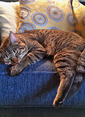
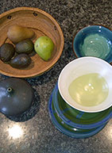
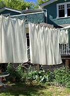
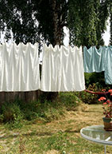
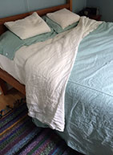
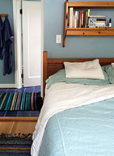
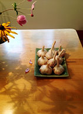
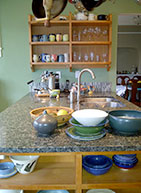
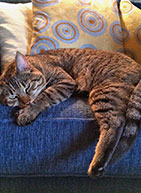
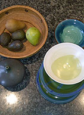
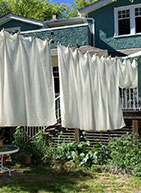
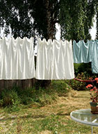
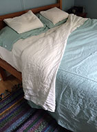
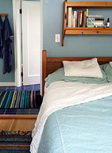
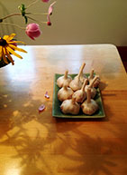
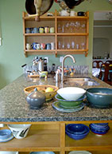